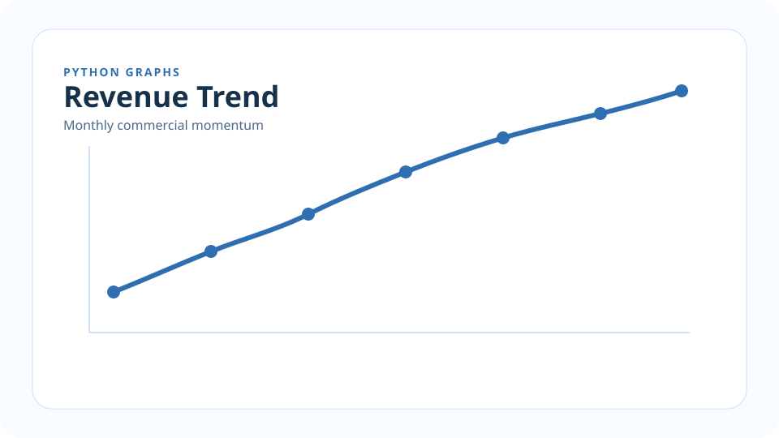
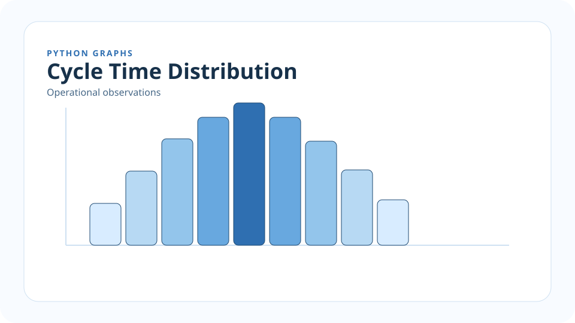
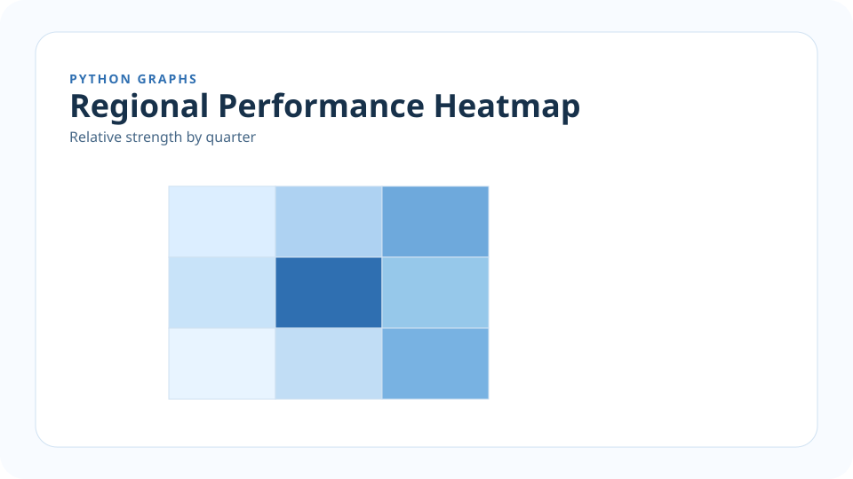
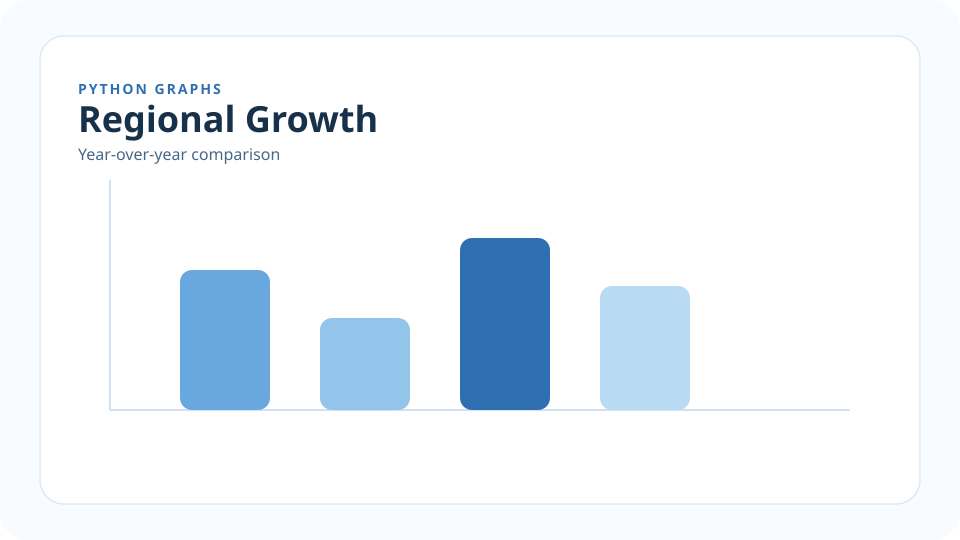
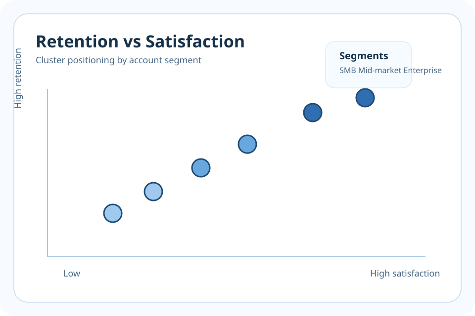
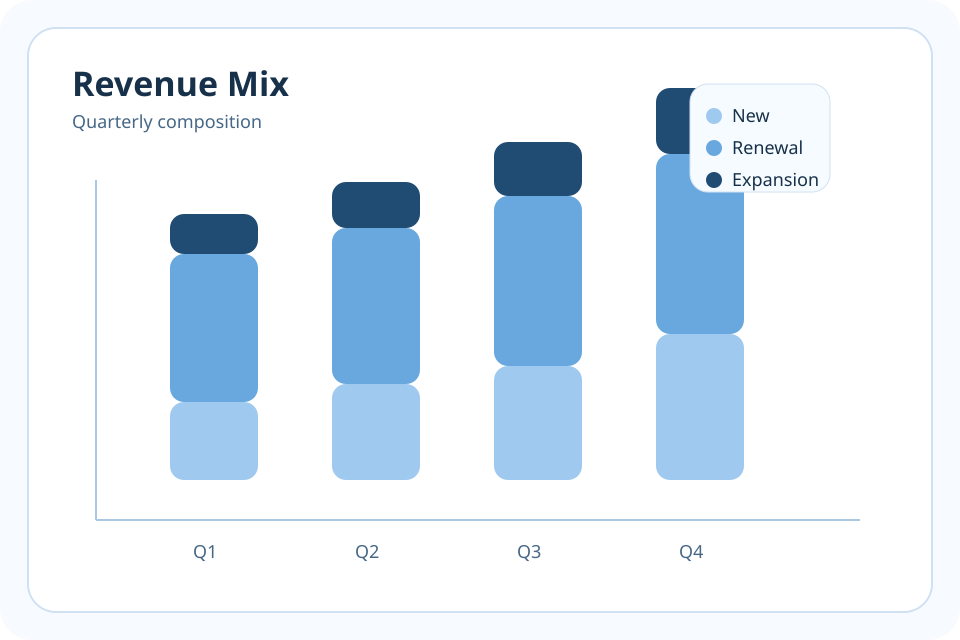
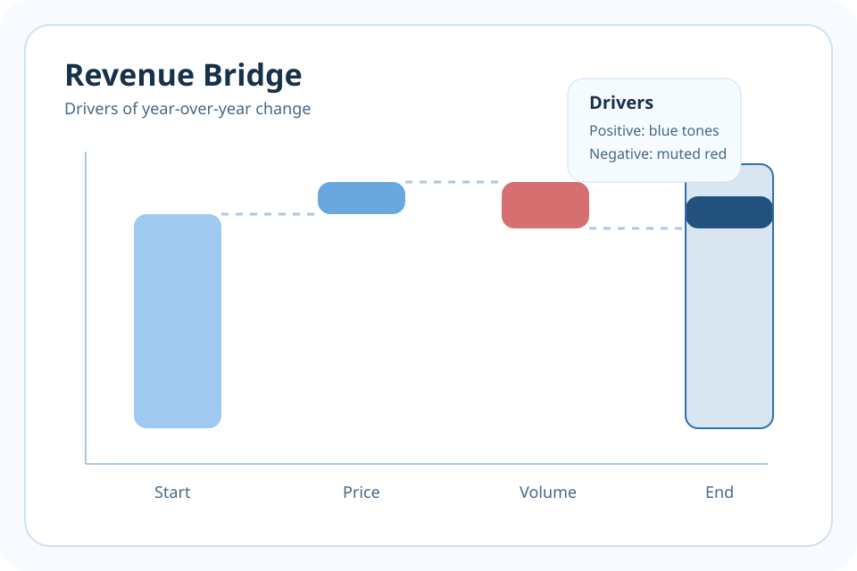

Package Install
pip install mertmensahStyle Library
Use the left pane to jump between categories. Each section shows the visual treatment, the package API, and copy-ready code snippets.
pip install mertmensahfrom mertmensah import (
apply_mert_theme,
lineplot,
barplot,
heatmap,
DeckSlide,
write_slide_deck,
)Theme Tokens
#f7fbff
#d8ecff
#68a8df
#2f6fb1
#204b73
Aptos Display 800
Aptos 400 for explanatory body copy and annotations.
Aptos 700 for labels, pills, buttons, and section markers.
from mertmensah import apply_mert_theme, get_palette
apply_mert_theme()
palette = get_palette()
primary = palette[0]
accent = "#204b73"
surface = "#f7fbff"HTML Slide Decks
from mertmensah import DeckSlide, DeckSection, write_slide_deck
slides = [
DeckSlide(
eyebrow="Quarterly Review",
title="Commercial Performance",
subtitle="A concise browser-viewable deck.",
bullets=[
"Revenue and margin improved.",
"West region led growth.",
],
sections=[
DeckSection(
heading="Implication",
bullets=["Prioritize renewals", "Scale proven playbooks"],
)
],
)
]
write_slide_deck(slides, output_path="deck.html", title="Quarterly Review")Python Graphs
Python Graphs

from mertmensah import apply_mert_theme, lineplot
import pandas as pd
apply_mert_theme()
df = pd.DataFrame({
"month": ["Jan", "Feb", "Mar", "Apr"],
"revenue": [120, 140, 180, 205],
})
ax = lineplot(
df,
x="month",
y="revenue",
title="Revenue Trend",
subtitle="Monthly commercial momentum",
)Python Graphs

import numpy as np
import matplotlib.pyplot as plt
from mertmensah import apply_mert_theme, style_axes, add_source_note
apply_mert_theme()
values = np.random.normal(loc=72, scale=9, size=300)
fig, ax = plt.subplots(figsize=(10, 6))
ax.hist(values, bins=18, color="#68a8df", edgecolor="#204b73")
style_axes(ax, title="Cycle Time Distribution", subtitle="Operational observations")
add_source_note(ax, "Source: Internal process logs")Python Graphs

from mertmensah import heatmap
import pandas as pd
matrix = pd.DataFrame(
[[0.8, 0.6, 0.4], [0.7, 0.9, 0.5], [0.5, 0.7, 0.85]],
columns=["North", "South", "West"],
index=["Q1", "Q2", "Q3"],
)
ax = heatmap(
matrix,
title="Regional Performance Heatmap",
subtitle="Relative strength by quarter",
)Python Graphs

from mertmensah import barplot, add_source_note
import pandas as pd
summary = pd.DataFrame({
"team": ["North", "South", "West", "East"],
"growth": [14, 9, 17, 12],
})
ax = barplot(
summary,
x="team",
y="growth",
title="Regional Growth",
subtitle="Year-over-year comparison",
)
add_source_note(ax, "Source: Internal planning data")Python Graphs

import matplotlib.pyplot as plt
import pandas as pd
from mertmensah import apply_mert_theme, style_axes
apply_mert_theme()
df = pd.DataFrame({
"satisfaction": [61, 66, 70, 74, 79, 83],
"retention": [58, 62, 67, 71, 78, 84],
"segment": ["SMB", "SMB", "Mid", "Mid", "Ent", "Ent"],
})
fig, ax = plt.subplots(figsize=(10, 6))
ax.scatter(df["satisfaction"], df["retention"], s=180, c="#68a8df", edgecolors="#204b73", linewidths=1.2)
style_axes(ax, title="Retention vs Satisfaction", subtitle="Cluster positioning by account segment")Python Graphs

import matplotlib.pyplot as plt
import pandas as pd
from mertmensah import apply_mert_theme, style_axes, add_source_note
apply_mert_theme()
df = pd.DataFrame({
"quarter": ["Q1", "Q2", "Q3", "Q4"],
"new": [18, 22, 24, 28],
"renewal": [34, 36, 39, 41],
"expansion": [8, 10, 12, 15],
})
fig, ax = plt.subplots(figsize=(10, 6))
ax.bar(df["quarter"], df["new"], color="#9fc9ee", label="New")
ax.bar(df["quarter"], df["renewal"], bottom=df["new"], color="#68a8df", label="Renewal")
ax.bar(df["quarter"], df["expansion"], bottom=df["new"] + df["renewal"], color="#204b73", label="Expansion")
style_axes(ax, title="Revenue Mix", subtitle="Quarterly composition")
ax.legend(frameon=False)
add_source_note(ax, "Source: Planning model")Python Graphs

import matplotlib.pyplot as plt
import pandas as pd
from mertmensah import apply_mert_theme, style_axes
apply_mert_theme()
bridge = pd.DataFrame({
"step": ["Start", "Price", "Volume", "Mix", "End"],
"change": [120, 18, -11, 9, 136],
})
starts = [0, 120, 138, 127, 0]
heights = [120, 18, -11, 9, 136]
colors = ["#9fc9ee", "#68a8df", "#d66f6f", "#204b73", "#2f6fb1"]
fig, ax = plt.subplots(figsize=(10, 6))
ax.bar(bridge["step"], heights, bottom=starts, color=colors)
style_axes(ax, title="Revenue Bridge", subtitle="Drivers of year-over-year change")